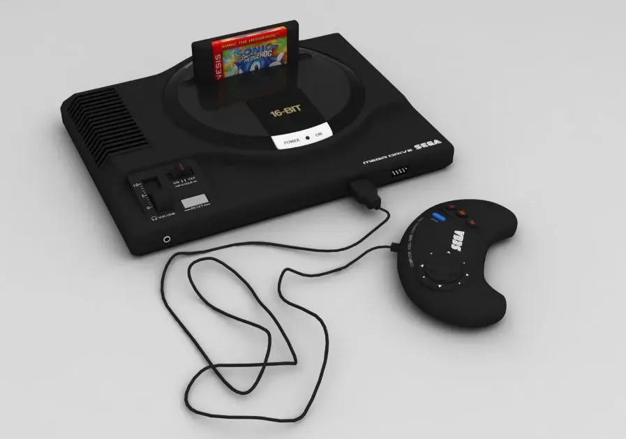

The 16-Bit Powerhouse
Launched in Japan in 1988, the Mega Drive defined the "console wars". It brought the "cool factor" to gaming, challenging the status quo with fast-paced arcade ports and marketing that "did what Nintendon't".

The Origin
Arcade at Home
Powered by the Motorola 68000, it was designed to bring Sega's massive arcade hits like Altered Beast and Golden Axe into the living room with near-perfect accuracy.
The Peak
Blast Processing & Sonic
The arrival of Sonic The Hedgehog in 1991 changed everything. Its high-speed scrolling and "Blast Processing" made the Mega Drive the king of 90s action.
The Demise
Add-on Overload
The ecosystem became fragmented with the 32X and Sega CD. Technical confusion eventually led Sega to focus on the next generation.
Pro Tip for Collectors
Look for the "High Definition Graphics" text on Model 1 consoles! These early units have the best audio chips (YM2612) for that iconic FM synth sound.